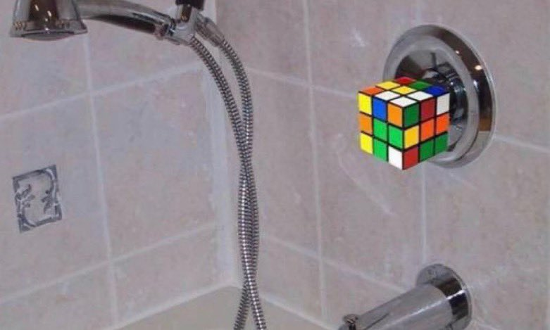
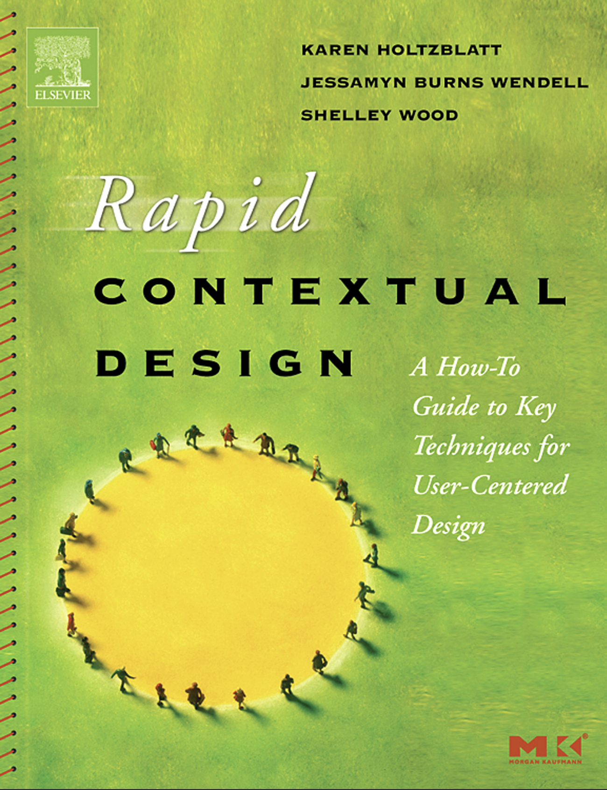
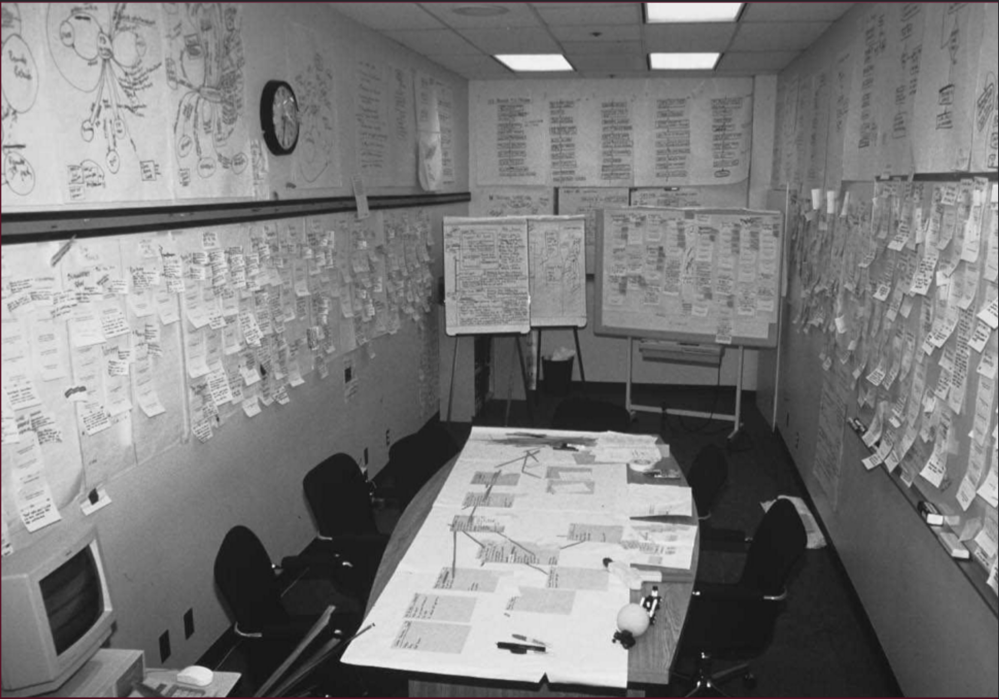
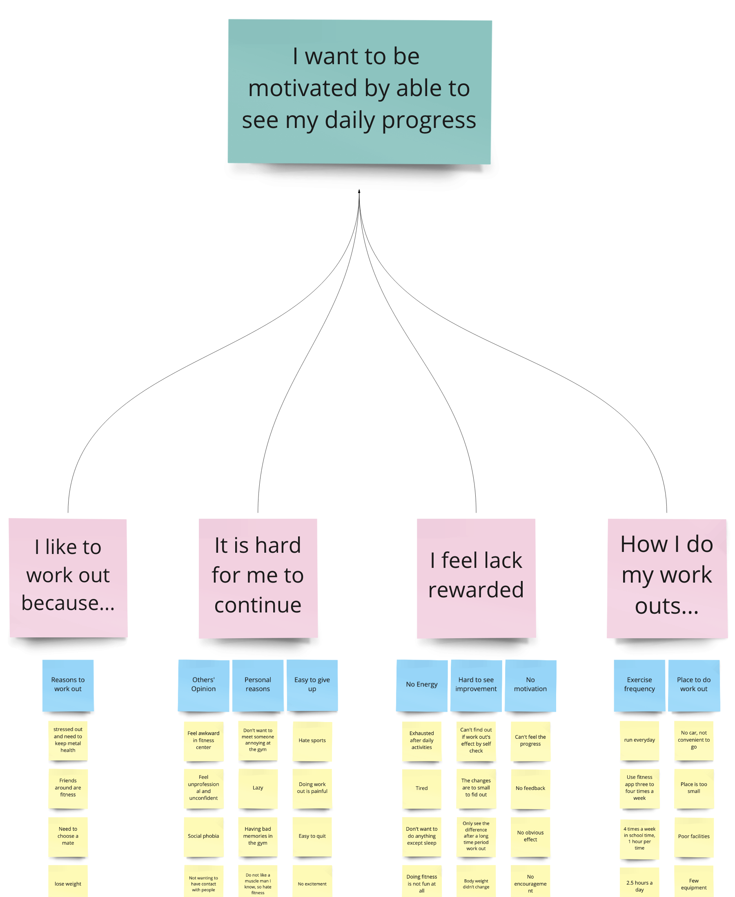

Info & Interaction Design, Contextual Inquiry
Mick McQuaid
2022-09-07
Week FOUR
But first … Project Focus
Recap, Last week
- Audiences
- Epochs
- Bad design (I skipped a favorite)
Hotel showers
More recap

Make your own triangle, showing two “green” bubbles, one for where you are now and one for where you aspire to be
Interaction Design
- Contextual inquiry
- Personas
- Scenarios
- Prototypes
Contextual Design
But before we consider contextual design …
Let’s consider the broader question of how you study users
Three ways to study users
- Contextual inquiry
- Ethnography
- Participatory design
Contextual inquiry
- Radical changes
- Short time frame
- In the workplace
- Relies on familiar work structure
- Requires least client time and designer time
Participatory design
- Incremental changes
- Empowering users
- Medium client time and designer time
- Improved user acceptance
Ethnography
- Radical changes in exotic workplaces
- Requires the most client time and designer time
- Usually used for poorly understood work environments
- Designers immerse themselves in the work environment
- E.g., Barley’s epic study of radiologists
Contextual Inquiry
Contextual Inquiry Process
- Prepare for workplace interviews / observations
- Conduct workplace interviews / observations
- Interpret workplace interviews / observations
Immersion
Prepare for the interview
Who should you interview?
- Each team member should interview at least two people for this assignment
- Consider roles not titles
- Consider context
- Consider the work you will support
- Consider who all is involved
- Consider where information comes from
What contexts should be sampled?
- Consider different work and social contexts
- Strive for variety
- Could use differences in productivity as a basis (careful!)
Interview style
- Intermittent work (most common)
- Uninterruptible work
- Extremely long work
- Mobile Work
- Extremely focused work
Logistics
- Distance
- Resistance
- Confidentiality and security
- Time commitment (two hours if you can get it)
- Cultural issues
- Dress
- Spacing of interviews (as tight as possible)
- Coordinating with interpretation sessions
- Lost interviews
How do you get interviews?
- Vendors
- Sales
- Sales support
- Management
- Tech support
- User advocate
- Advertise
Share interview techniques
- Two interviewers
- Avoid recording (unless on a platform like Zoom)
- Avoid Zoom (try to be live in the workplace)
- Don’t fear silence
- Use work artifacts if live
Conduct the interview
Materials
- Work from a checklist and a script
- Deal with confidentiality
- Give an introductory talk
- Give an opportunity for unexpected issues
Procedure
- Introduce yourself
- Reinforce your focus
- Set expectations
- Defer to the user as expert
- Describe confidentiality policy (maybe again)
- Get permission to record (if you want to record)
- Deal with opinions about tools or companies
- Explain that interruptions are interesting
- Look for opportunities to do contextual inquiry
Continued procedure
- Transition to work focus
- Observe and discuss
- Be nosy
- Take notes (avoid using a laptop)
- Know what to take notes about!
What to take notes about
- The user’s role
- The user’s responsibilities
- The user’s communication types
- The user’s organization of physical space
- The user’s artifacts (get copies if possible)
- Breakdowns in the user’s work
- What works and what doesn’t
Interview activities
- Share design ideas stimulated by events
- Draw the physical space
- Take photos (if you get permission)
Wrap up
- Summarize what you learned, check your high-level understanding
- Ask about pet issues
- Give tips about system use (avoid doing so earlier)
- Thank the user and give a gift if possible
- Be sure you followed Holtzblatt’s tips in Tables 4-1 through 4-5!
Interpret the interviews
Intro
- Today usually done via FigJam or Miro instead of on a wall with post-its
- Should happen 48 hours after the interviews (or sooner)
- You should NOT talk to your teammates (or anyone else) about the interviews before the interpretation session
- You should never do it alone
- Must be synchronous
- Usually takes all day
Interpretation session steps overview
- Create affinity notes from your atomic observations
- Add 500 affinity notes to the diagram
- Organize the affinity notes by similarity
- Add the bottom level of labels above the affinity notes
- Add the temporary top level of labels and reorganize the bottom level of labels and affinity notes to fit them
- Remove the temporary top level labels
- Add the middle level of labels
- Add the top level of labels
First steps
- Write affinity notes in the first person
- Use words that mean the same to everyone
- Let the meaning emerge from the groups instead of predefining
- Reorganize hard-to-label groups rather than wrestling with unsatisfying label wording
Bottom level of affinity labels
- Start when you can’t keep track of the affinity notes
- Give them design relevance
- Highlight distinctions rather than trying to bring groups together
Temporary top level of affinity labels
- Helps you move the affinity notes around into positions closer to their final positions
- Only half a dozen temporary top labels
- Remove them when this step is complete
Middle level of affinity labels
- Highlight highlevel work concepts
- Steps in work
- Communication strategies in work
- Tool use
- Organizational structure
Top level of affinity labels
- Describe the key issues relevant to the design
- Inform the behavior patterns that will be the basis for personas
- Any break in the chain from interview to key issues jeopardizes the persona milestone, coming up next
Example of the relationship between a top level label and those below it

References
Bannon, Liam, Jeffrey Bardzell, and Susanne Bødker. 2018. “Reimagining Participatory Design.” Interactions 26 (1): 26–32. https://doi.org/10.1145/3292015.
Beyer, Hugh, and Karen Holtzblatt. 1999. “Contextual Design.” Interactions 6 (1): 32–42.
Holtzblatt, Karen, Jessamyn Burns Wendell, and Shelley Wood. 2005. Rapid Contextual Design: A How-to Guide to Key Techniques for User-Centered Design. San Francisco, CA: Morgan Kaufmann.
Spinuzzi, Clay. 2000. “Investigating the Technology-Work Relationship: A Critical Comparison of Three Qualitative Field Methods.” In IPCC/SIGDOC ’00: Proceedings of IEEE Professional Communication Society International Professional Communication Conference and Proceedings of the 18th Annual ACM International Conference on Computer Documentation, 419–32. Piscataway, NJ, USA: IEEE Educational Activities Department.
END
Colophon
This slideshow was produced using quarto
Fonts are League Gothic and Lato